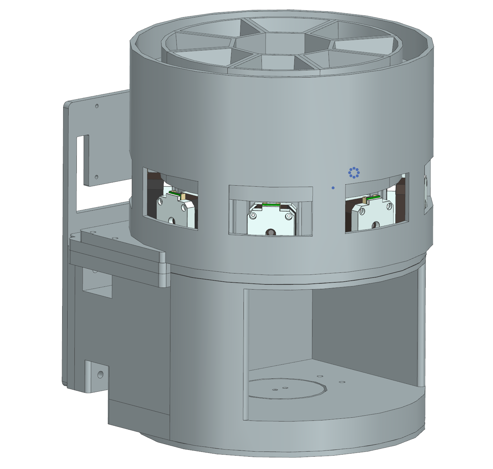
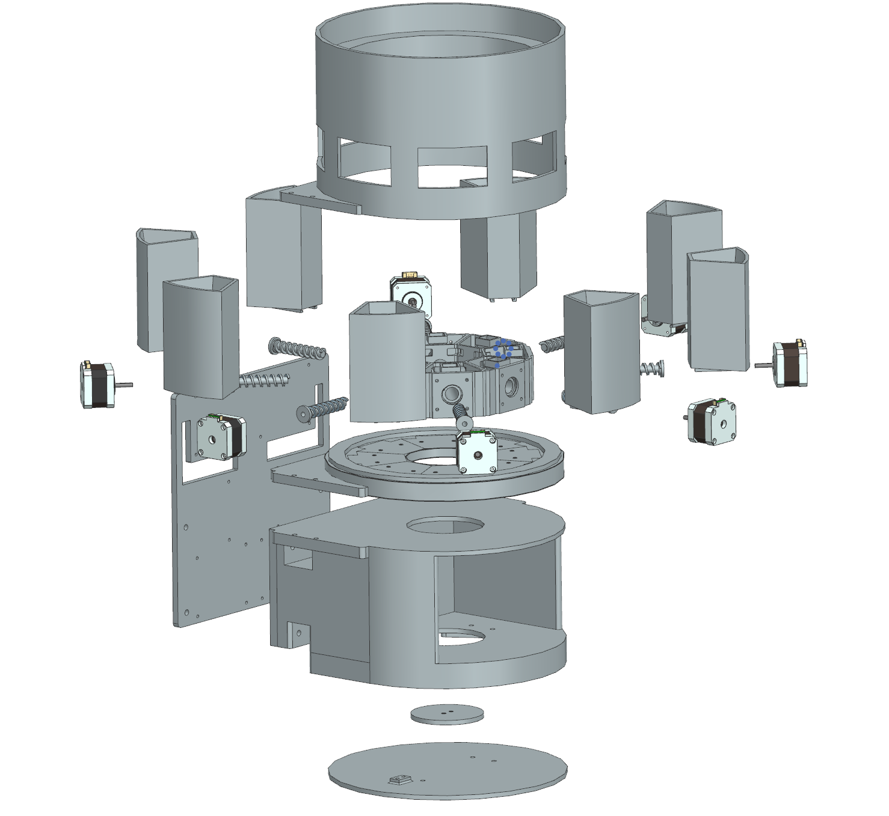
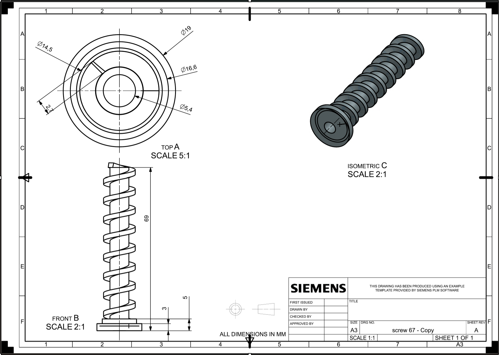
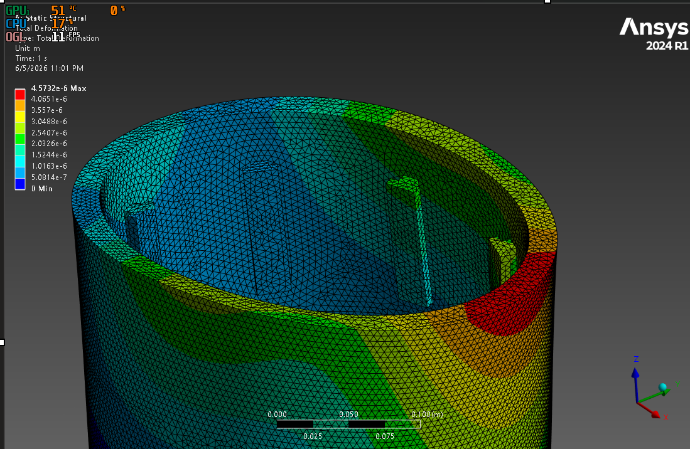

ME 407 mechanical design capstone: a compact automated spice dispenser with eight removable cartridges, auger-based dispensing, load-cell mass feedback, recipe storage, and safety interlocks. Design completed; prototype validation planned.

Spices are used constantly in kitchens, food-science laboratories, and small-scale catering, where seasoning often needs to be repeated with consistent amounts. Manual spooning or shaking is time-consuming, operator-dependent, and prone to cross-contamination when several spices are handled in sequence.
Commercial dispensers exist, but many target large-scale use, rely on proprietary capsules, or can't easily be customised for educational prototyping. The goal was a compact, low-cost automated dispenser that stores multiple spices separately and dispenses a selected amount in a controlled, repeatable way.
The project followed a full design workflow: literature survey, requirement definition, functional decomposition, concept generation, weighted concept selection, detailed design calculations, control-system planning, manufacturing planning, sustainability review, and verification test planning.
After functional decomposition, a morphological chart, and weighted concept evaluation, the Tech-Premium concept was selected. It combines removable sealed cartridges, screw-auger dispensing, electric-scale feedback, recipe programmability, and interlock safety.



Custom polymer parts, including the auger and cartridge components, are planned for FDM printing. Motors, electronics, the load cell, and fasteners are purchased, and the unit is assembled manually. The report includes working drawings, route sheets, a make/buy plan, and a preliminary bill of materials.
A verification test plan covers storage volume, dimensions, mass, dispensing throughput and accuracy, power consumption, safety, maintainability, and hygiene. Per-spice calibration, load-cell vibration filtering, final mass measurement, and prototype validation are essential before real use.
As a member of a seven-person capstone team, I contributed to the mechanical design and documentation of the dispenser. The project involved requirement definition, concept evaluation, detailed design calculations, CAD/FEA interpretation, manufacturing planning, control-system planning, and final report preparation.